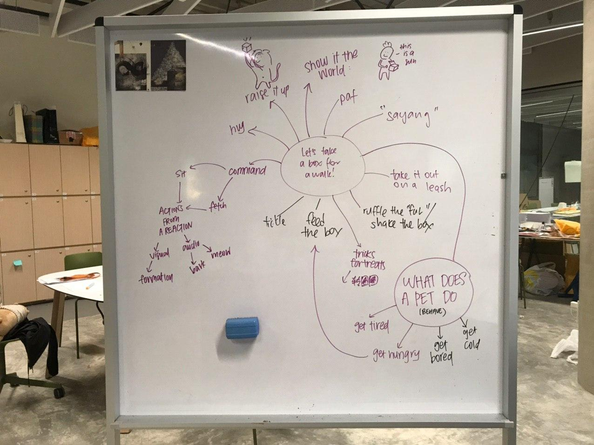
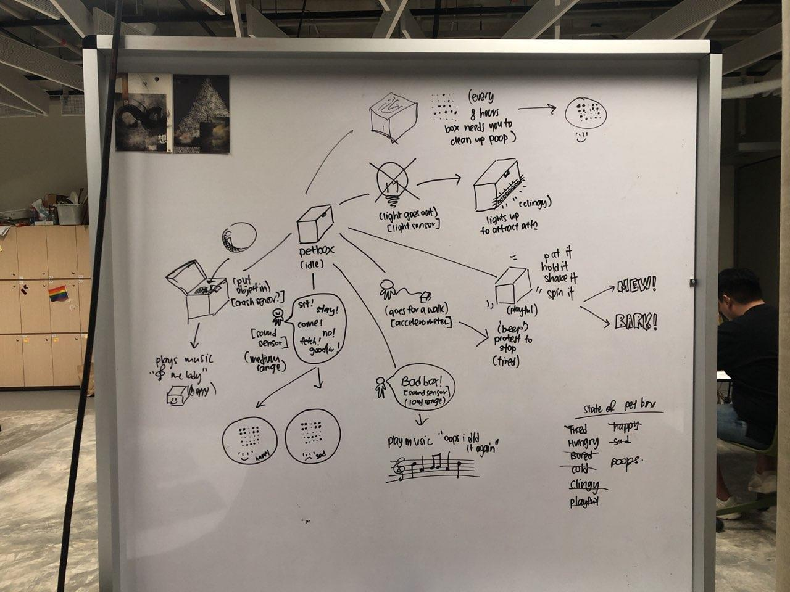

Microbit Project Progress
“Mapping” [Audio, Visual, Physical] feedback with Object interaction.
- Closed Box (with mewing sounds): [action] Open lid > [audio feedback] Mewing sounds stop
- Closed Box (static colours): [action] Topple box > [visual feedback] video plays moving colours
- Closed Box: [action] Open lid > [audio feedback] Orchestra sounds (maybe different actions will have different sounds)
- Empty Box (with something in it): [action] takes out object (inside box) > [audio feedback] plays MC Hammer - You Can't Touch This.



